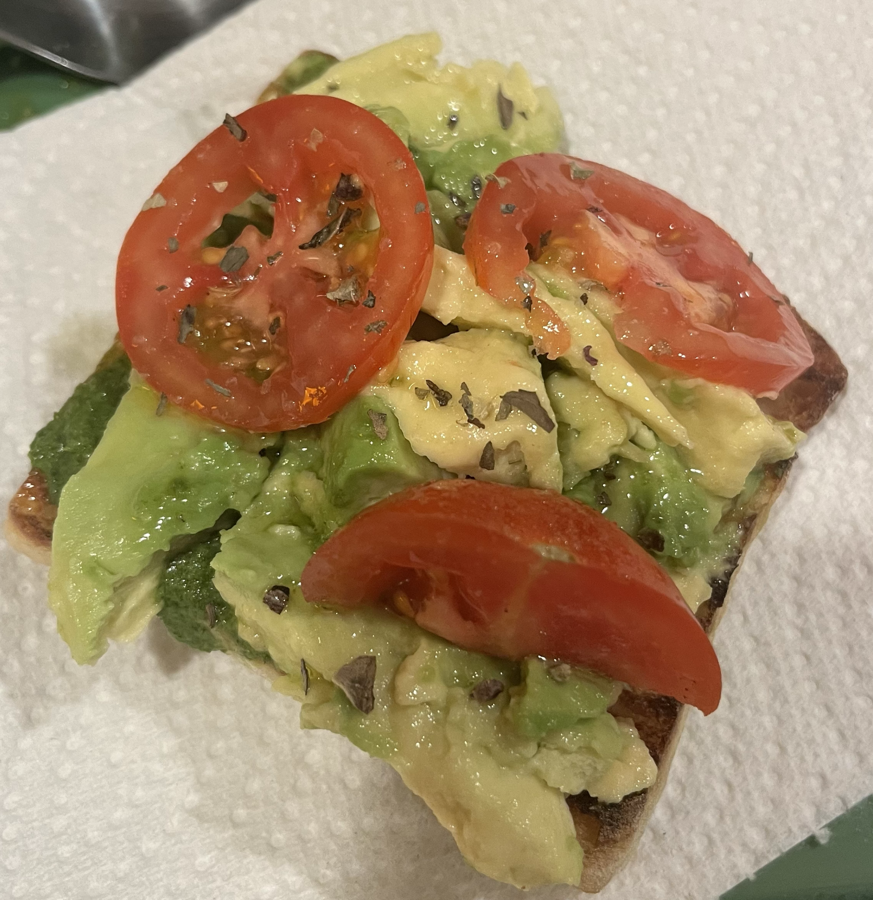

Blog #3

Homemade!
Last Saturday, I went into my kitchen and began preparing a piece of handcrafted avocado toast. The picture I took definitely does not do this piece of toast justice. I toasted the ciabatta bread which was $2.49 for a pack of four mini loaves. Drizzled some garlic olive oil on top because I did not have any regular olive oil, which was $6.99 for the whole bottle. It is difficult to see, but I also used store bought vegan pesto which was around $3.99. This ended up being one of my favorite add-ons to the toast. My avocado was already the perfect consistency therefore I did not need to mash it very much. The avocado was $3.49. I cut up roma tomatoes ($3.49) and sprinkled some basil seasoning on top (2.49). I bought all my ingredients from Trader Joes which is typically a lot less expensive than other grocery stores so that came in handy. I also feel a little biased in this rating process because all of the ingredients that I chose are flavors that I already gravitate towards. I tried to go for more Italian flavors. Overall the total I spent on ingredients was… $22.94 which is a bit pricey for avocado toast in my opinion. With that being said, I can make multiple avocado toasts– therefore the price evens out with the ones from the restaurants. Flavorwise I am a little more drawn to it due the ingredients being handpicked by myself, however, I do believe I could have taken some risks and played with more unique ingredients and toppings. I just went with tomatoes, meanwhile both Joan’s on Third and the Oak Gourmet used a little more obscure flavors that I wouldn’t have thought of to add to the toast such as radishes or sprouts. —> RATING (8.9/10).
HOME/INTRODUCTION PAGE
-Review One-
-Review Two-